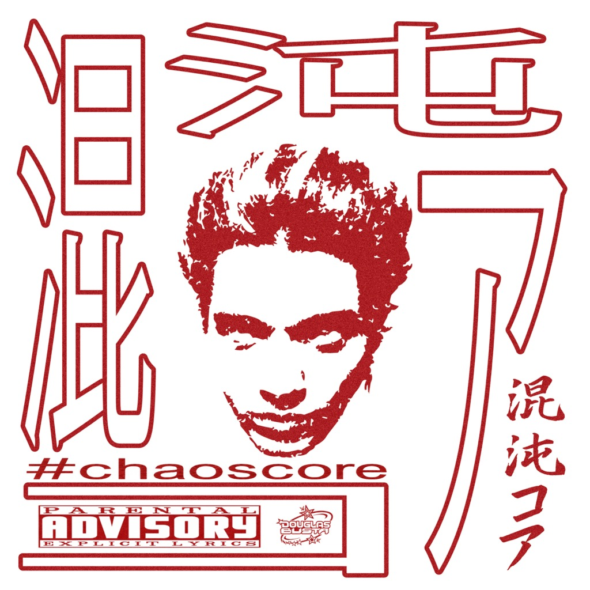

Drop zone
Qui entrano i video esclusivi
Ho lasciato una base pulita per inserire clip verticali, making-of, sessioni in studio e momenti con altri artisti senza cambiare architettura del sito.
Backstage archive
Una stanza privata per demo, sessioni, backstage, produzione e materiali che arrivano solo a chi ha il link o il codice giusto.

Drop zone
Ho lasciato una base pulita per inserire clip verticali, making-of, sessioni in studio e momenti con altri artisti senza cambiare architettura del sito.
Section 01
Video raw, take vocali, registrazioni, errori, prove e frammenti di produzione.
Section 02
Breakdown dei beat, suoni, synth, catene di lavoro e parti del processo creativo dietro alle tracce.
Section 03
Clip con featuring, momenti fuori studio e tutto il materiale che vuoi tenere riservato a chi ha comprato il tag NFC.
Next step
Quando arrivano i video, basta aggiungere gli URL nel database o nel codice e fare push su GitHub: Vercel ridistribuisce senza cambiare il dominio.